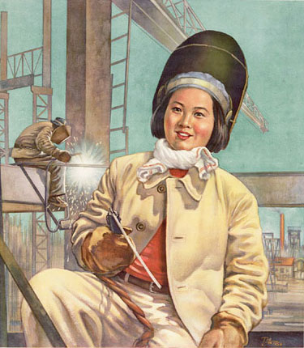
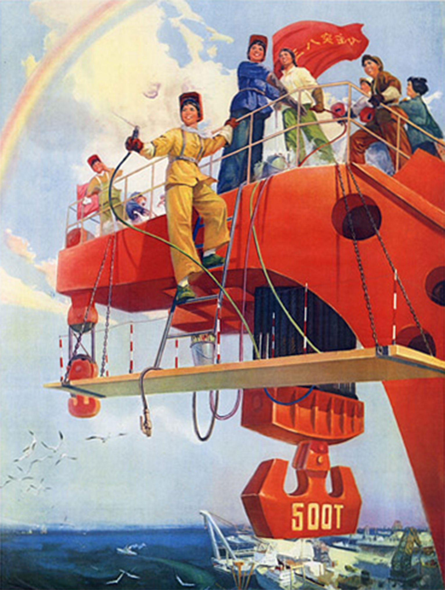
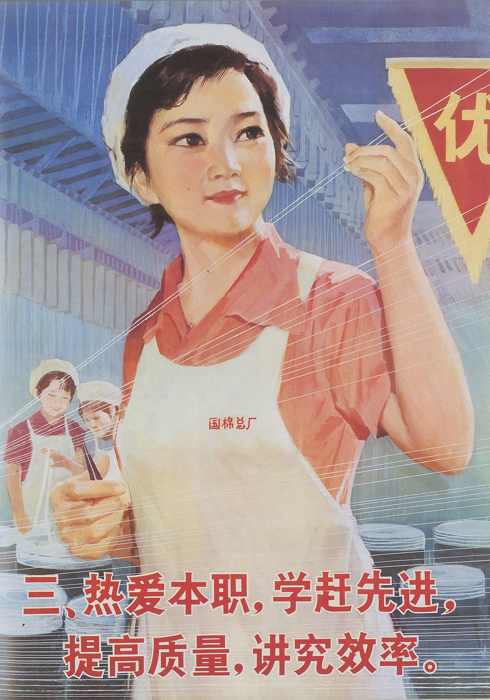
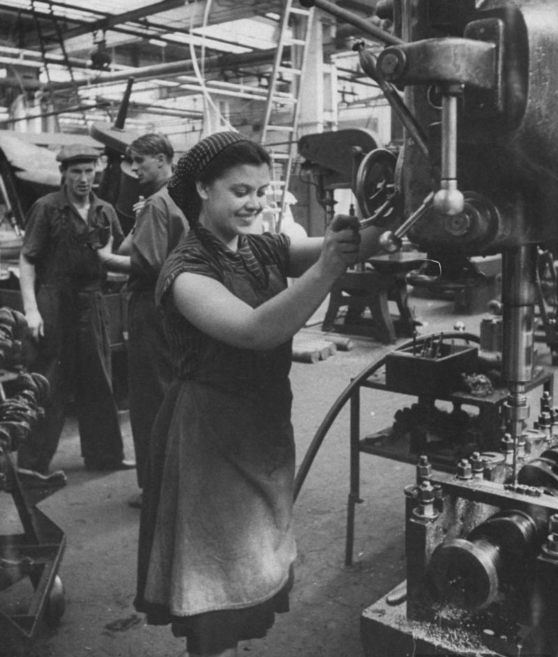
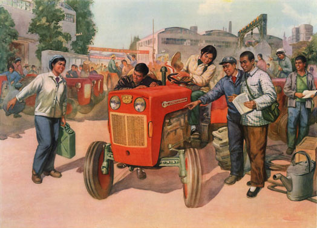
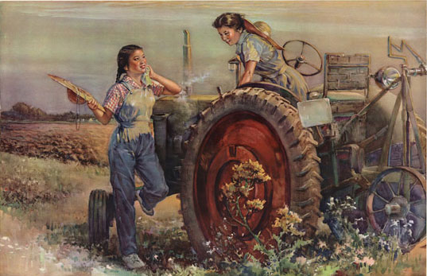
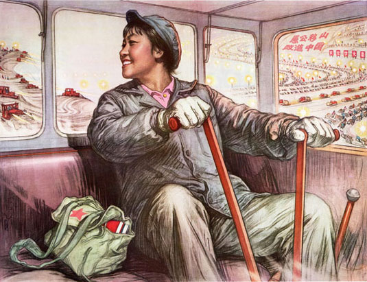

<!DOCTYPE html>
<html>
    
    <head>
    <link rel="stylesheet" href="boilerplate.css" />
	<link rel="stylesheet" href="styles.css" />
	<meta charset="utf-8">
    <meta name="viewport" content="initial-scale = 1.0,maximum-scale = 1.0" />
    <link href='http://fonts.googleapis.com/css?family=Oswald:400,300,700' rel='stylesheet' type='text/css'>

    </head>
        <body>

                 <div id="hidNav">
            <ul class = "links">
                <li><a href="about.html" > ABOUT</a> </li>
                <li><a href="contact.html" > CONTACT</a> </li>
                <li><a href="sources.html" > SOURCES</a> </li>
            </ul>

            <ul class = "thumbnails">
        
                <li><a style="background-image: url(images/navImage1.jpg)" href="intro.html" > INTRODUCTION</a> </li>
                <li><a style="background-image: url(images/navImage2.jpg)" href="ch1.html" > CONSCIOUSNESS RAISING</a> </li>
                <li><a style="background-image: url(images/navImage3.jpg)" href="ch2.html" > IRON GIRLS</a> </li>
                <li><a style="background-image: url(images/navImage4.jpg)" href="ch3.html" > CHALLENGING FEMININITY</a> </li>
                <li><a style="background-image: url(images/navImage5.jpg)" href="ch4.html" > THE TURNING <br />POINT</a> </li>

            </ul>
        </div>

        <div id="openNav"></div>​


                <div id="ch2p1" class="ch2p1 clearfix">
                </div>

                <div id="ch2p2" class="ch2p2 clearfix">
                    <p id="ch2p2secondary">
                    <span id="textspan">FROM THE 1950s ONWARDS, THE WAY WOMEN’S BODIES WERE TREATED IN CHINA BECAME AN IMPORTANT COMPONENT OF “RECLAIMING THE BODY” FOR WESTERN WOMEN. </span><br />
                    </p>
                </div>

                <div id="ch1p3" class="ch1p3 clearfix">
                </div>

                <div id="ch2p3" class="ch2p3 clearfix">
                    <p id="ch2p3copy1">
                    By the 1970s, Western women were learning <span class="italic">kung fu</span> for self–defense, practicing <span class="italic">taichi quan</span> for relaxation and relying on acupressure for the relief of minor ailments. China had truly “arrived” as a source for Western feminist plundering. As one woman wrote, “In July 1970 I began studying Kung Fu ...which has helped me learn the discipline and control necessary for a strong healthy body.”  <br />
                    </p>
                    <p id="ch2p3pullout1">
                    As women learnt new ways to move their bodies, the Chinese “iron girls” and even ordinary Chinese women workers became models of inspiration. <br />
                    </p>
                    
                    <p id="ch2p3copy2">
                    Whereas women in the United States were almost wholly confined to so–called “traditional” feminine occupations and pastimes, women in China climbed mountains, flew planes and fixed oil rigs.  <br />For women’s liberationists this proved that it was not women’s bodies themselves which were holding women back: it was a society which devalued women.<br /><br />Just as the body was the site where women experienced their oppression, so too it would be the place of renewal, awakening and the shedding of restrictive norms.<br /><br />In 1970, however, the women’s liberation movement was demanding equal rights, equal pay for women, paid maternity leave, free or at least low cost abortion on demand, free child care, free medical care, free contraception, widely available information on birth control, freedom for women from a limited choice of restrictive “traditional” roles, funded rape crisis centers and domestic violence shelters, free no fault divorce, the right to self–development and so on.<br />
                    </p>
                    <p id="ch2p3pullout2">
                    Most of these were available in China.<br />
                    </p>
                    
                    <p id="ch2p3copy3">
                    By 1971 in China, more than half of all medical students, and nearly 100% of obstetricians were women. This provided a dramatic contrast with the situation in America, where only 7% of physicians were women.  In America, while 90% of women had engaged in paid work at some time in their lives, the earnings of a full–time woman worker in 1968 was only 57% of that of a full– time male worker. In addition, few American women held executive positions. <br /><br />In China, as many accounts testified, women were brigade leaders, directors and leaders, in addition to the oil workers and other “iron girls” that were a common feature of earlier visitors’ reports. Ruth Sidel, in <span class="italic">Women and Child Care in China: A First Hand Report</span> lists twelve diverse occupations for women which had been featured in <span class="italic">China Pictorial</span> in 1971 including scientist, welder, soldier and party official. A small number of high–profile women, such as Song Qing Ling (deputy Chairman of the PRC) and Jiang Qing (Mao’s wife) even held high level public positions although there was no doubt that men still dominated the government. Maternity leave in China was paid, contraception and abortion were free, and an extensive free child care system allowed women to work without worry concerning child–minding. <br /><br />In America, free child care was difficult to find and most child care was expensive. <br />Working women could not even claim child care expenses as a tax deduction. The comparisons could continue and most tell <br />the same tale: <br />
                    </p>
                    <p id="ch2p3pullout3">
                    conditions seemed extraordinarily good for women in China.<br />
                    </p>
                </div>

                <div id="ch2p4" class="ch2p4 clearfix">
                   
                </div>


                <div id="ch2p5" class="ch2p5 clearfix">
                
                            <p id="ch2p5copy">
                        Underlying the approach in China is a particular understanding of the position of women’s liberation in Marxist thought. Fundamental to the problem of women’s oppression in Marxist thought is the question of women’s labor. Women are oppressed because they are cut off from socially productive labor, claimed Engels. The solution is to educate women (with, for example, literacy campaigns) and free them from the constraints of the family and reproduction in order for them to labor outside the home (housework and child–rearing being considered “nonproductive.”) Thus a child–care system, maternity leave, free contraception and abortion are the minimum requirements for women to take their place in the work force. The emphasis is on work as liberation.<br /><br />In Marxism, work provides more than an income—it provides an escape from the patriarchal family and feudal ideology into a worker’s consciousness. The experience of engaging in labor provides the “glue” which holds the socialist society together. The liberation of women is therefore necessary for the creation of a socialist state: women’s liberation as a means to an end. <br /><br />This is not the case with the women’s liberation movement in the West and its demands regarding women and work. Work provides an escape from an oppressive family system by providing women with an independent income. Working in a low–paid repetitive job reinforces the experience of feeling undervalued — particularly in a society where worth is measured by money. The goal is self–expression, personal liberation, and individual development. The path to that goal is the recognition of gender oppression as a universal experience, which crosses class and race lines. And so it is not the consciousness engendered by the relationship to labor which provides coherence, but an experience of living in a particular body type: type ‘female’.<br />
                        </p>
                   
                    <!-- !-->
                </div>

                <div id="ch2p6" class="ch2p6 clearfix">
                    <p id="ch2p6pullout1">
                    From the early 1950s on, the female tractor driver was one of the most frequently seen symbols of Chinese socialist modernity. <br />
                    </p>
                    <p id="ch2p6copy1">
                    Known as the <span class="italic">nüjie diyi</span> model workers, the “female kind first,” they were part of the group of “the first” women to be trained in work involving heavy machinery. Liang Jun, one of China’s first female tractor drivers, was introduced to Chinese audiences in 1953 in posters, anthologies and school texts. She even appeared on the 1 yuan banknotes, issued in 1962.<br /><br />The occupational choice of many of these first women to become tractor drivers had been influenced very much by the many photographs of Soviet women taking part in production, and by Soviet films about mechanized agriculture that circulated in China in those days. Male Soviet advisors and Soviet models also played an important role in the actual training programs on Chinese soil.<br />
                    </p>
                    
                    
                    <p id="ch2p6copy2">
                    In the many (auto–) biographical materials devoted to these “New women” in the early 1950s, a pattern clearly emerges. First, the female body needed to be strengthened, in order to be physically up to this new type of work that bore no semblance to the labor more tradionally associated with women. Secondly, once the workings of the </br> equipment were mastered, a symbiotic relationship emerged between the body <br> and the machinery. <br />
                    </p>
                    <p id="ch2p6pullout2">
                    By not giving in to physical discomfort, women liberated themselves from historical, familial and economic oppression.<br />
                    </p>
                    <p id="ch2p6copy3">
                    Obviously, the location of the “new woman” in propaganda posters was in the working class and in close proximity of equipment. She was no longer a mere country girl (<span class="italic">nongcun guniang</span>) but had become a woman–worker (<span class="italic">laodong funü</span>) by taking part in training and mastering machinery. She represented the group of new productive members of society that had been proletarianized and had broken out of the confines of domestic work.<br /><br />The fact that the tractor girls more often than not wore white shirts strengthened the message that they had joined the proletariat. The white shirt, with its connnotation of education, stood for the ideal of the advanced red and expert worker. Even when a tractor girl was situated as laboring in the countryside, the white shirt suggested external knowledge that helped to improve labor efficiency.<br /><br />Although these “first women” were largely undifferentiated in physical appearance from the idealized male body of the period, the qualifyer “female” rarely failed to appear in the slogan, thus reminding the reader that women could and should assume such proportions and occupations. Equally important, however, was the message that socialism demanded such reshaped bodies.These constant visual reminders of women taking part in work traditionally seen as within the male domain served an obvious purpose, even later on. When Liang Jun entered the tractor driver program in Heilongjiang in 1948 as the only woman in the group, she encountered resistance from classmates and teachers. <br />The hostile environment only inspired her to persevere in her unconventional choice of work.<br />
                    </p>
                    
                    
                    <p id="ch2p6copy4">
                    The images made a number of things clear: a woman should take part in production, whether in the factory or in agriculture, and in doing so, should not be excluded from operating machinery. Moreover, they firmly placed the woman in the proletariat. And finally, they indicated that leadership positions should be as open to women as to men. In reality and in practice, however, this largely remained utopian.<br />
                    </p>
                </div>

                <div id="ch2p7" class="ch2p7 clearfix">
                    <p id="ch2p7copy">
                    Later categorizations of the early Western women’s liberation movement as “liberal,” with the goal of personal freedom and the same opportunities as men, “socialist,” with a gender critique of  patriarchy combined with a class critique of capitalism, or “radical,” imagining a different femininity, but often used as a euphemism for political lesbianism, obscure the many commonalities between different theoretical positions. Seeing China as “utopian” is one such commonality. <br /><br />The appeal of China’s liberation of women for “liberal” feminists is obvious: women can take their rightful place as the equal of men in all spheres of life, particularly in the public sphere. The appeal of China’s liberation of women for “socialist” feminists is again clear: acting on class and gender oppression while eliminating capitalism is the only way to truly liberate women. “Radical” feminists saw Chinese women as completely freed from the constraints of femininity and therefore freed from restrictive sexual and social mores.  <br /><br />Support for each position can be found in the accounts published by Chinese women of the 1950s, 60s and 70s. These personal accounts are important because they challenge a view dominant outside China in the 1960s in which only the roles of women as workers were being changed. According to Juliet Mitchell, “At this stage of the revolution [1966] all the emphasis is being placed on liberating women in production.  This has produced an impressive social promotion of women. But it seems to have been accompanied by a tremendous repression of sexuality and a rigorous puritanism rampant in civic life.”<br />
                    </p>
                    <p id="ch2p7secondary">
                    <span id="textspan">ALTHOUGH NOT ALL WOMEN WERE “SEXUALLY LIBERATED” MANY FOUND THEMSELVES ABLE TO NEGOTIATE NEW RELATIONSHIPS OF EQUALITY,  AND ABLE TO REWORK AND CHALLENGE NOTIONS OF FEMININITY.</span><br />
                    </p>
                </div>
        

        <div id = "ch2bottomnav">
            <a href="ch3.html" class="right"> <p class = "chapterRight"> CHAPTER 3: </p>  <p class = "titleRight"> CHALLENGING FEMININITY</p> </a>
            <a href="ch1.html" class="left"> <p class = "chapterLeft"> CHAPTER 1: </p> <p class = "titleLeft"> CONSCIOUSNESS RAISING </p> </a>

        </div>
<script src="http://code.jquery.com/jquery-1.11.0.min.js"></script>
    <script type="text/javascript">

            $("#openNav").click(function() {
                var menu = $("#hidNav");
                if ($(menu).is(":visible")) {
                    $(menu).animate({height: 0}, 500, function() {$(menu).hide();});
                } else {
                    $(menu).show().animate({height: 170}, 500);           
                }
            });
    </script>


    </body>
</html>


